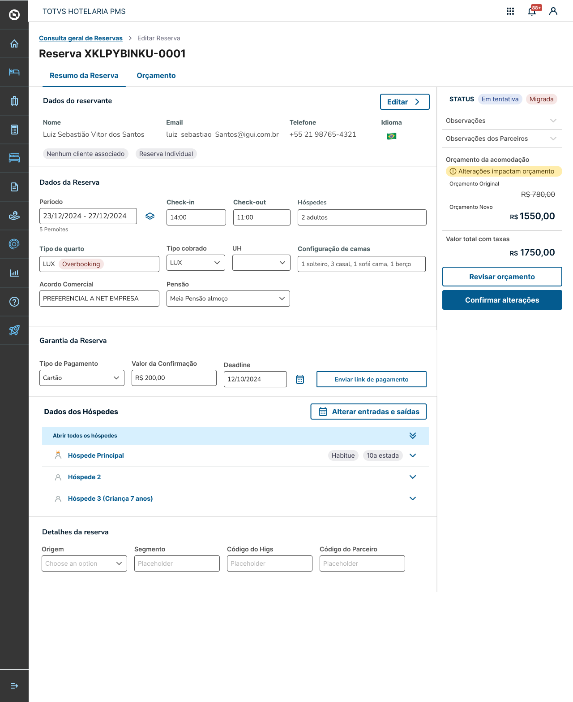
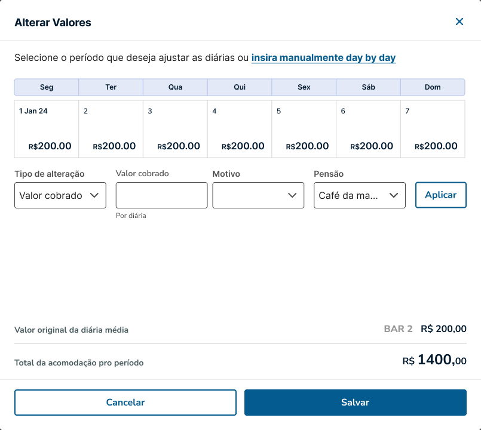
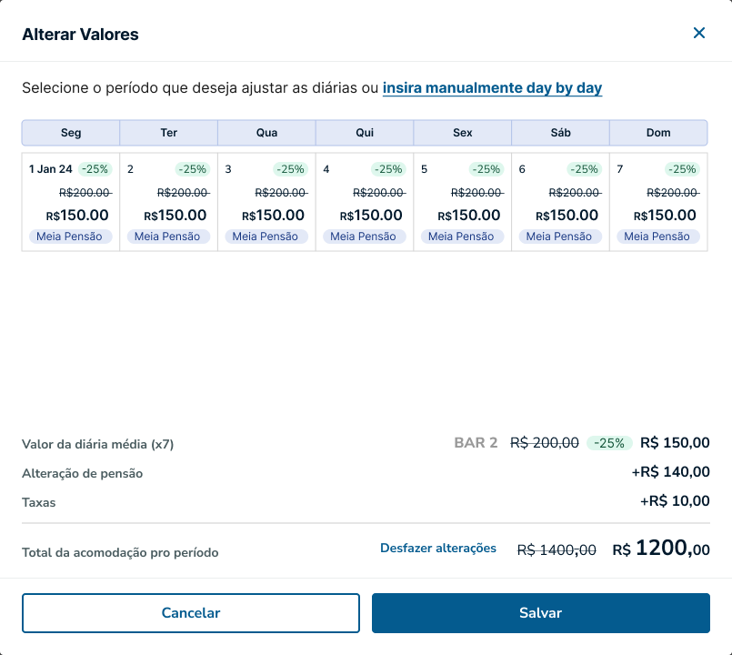

Redesenhando como os hotéis criam e editam reservas
Um discovery com seis hotéis deu origem a dois projetos conectados no TOTVS PMS: um novo fluxo de criação de reservas e uma experiência de edição refatorada. É também uma história sobre adaptar o design quando uma dependência técnica importante foi despriorizada.

Criar e editar reservas é a tarefa central do dia a dia da equipe de reservas de um hotel — e a parte do TOTVS PMS que ela mais usa. Os fluxos existentes eram densos, lentos para reservas grandes e desconectados da forma como as equipes realmente vendem.
Como designer responsável pela jornada de reservas do PMS, conduzi a pesquisa, defini fluxos e interfaces e apliquei os testes de usabilidade que guiaram cada iteração.
Conduzi seis entrevistas de 90 minutos com equipes de reservas — de um hotel independente de 57 quartos a uma rede de 50 hotéis — com um colega registrando as respostas. Um roteiro de 22 perguntas cobriu todo o ciclo de atendimento: primeiro contato, dados coletados, informações consultadas, ferramentas e gambiarras, retorno ao cliente e dores. Depois sintetizei as respostas pergunta a pergunta para comparar as práticas entre os hotéis.
“O maior desafio é utilizar várias plataformas e abas ao mesmo tempo para realizar apenas uma reserva.”— Equipe de reservas, rede com 11 hotéis
As equipes consultavam a disponibilidade no PMS, mas os preços no motor de reservas ou no site do hotel. Integrações de até 3 horas geravam divergências, lançamento duplicado e overbooking.
Planilhas e cadernos controlavam pagamentos, pendências, no-shows e tarifas ainda não publicadas. Um supervisor lançou 700 reservas à mão em um único mês.
A sequência real é disponibilidade → orçamento → reserva. As equipes negociam por telefone e precisam enviar o orçamento na hora, mantendo reservas não pagas “a confirmar”.
Mudar datas, hóspedes ou tarifas depois da reserva era lento — um grupo de 60 quartos travou o sistema por 40 minutos — e faltava um registro claro do que tinha sido negociado.
Seguir a sequência real. Pesquisar, orçar e reservar num só fluxo.
Mostrar sempre o valor. Toda alteração exibe seu impacto no preço.
Um lugar por tarefa. Nada de alternar abas para concluir uma reserva.
O novo fluxo de criação espelha a forma como as equipes vendem: pesquisar por período e ocupação, comparar quartos recomendados com as condições de cada tarifa (reembolso, pagamento, pensão), montar um carrinho que soma o orçamento e, então, revisar e confirmar.
Ele foi pensado junto com uma integração planejada entre o PMS e a gestão de tarifas dos hotéis, que traria automaticamente os preços corretos para a plataforma — resolvendo a primeira dor do discovery.

Boa parte do dia de uma equipe de reservas é dedicada a reservas que já existem: estender uma estadia, incluir um hóspede, renegociar uma tarifa. Refatorei a edição com os mesmos princípios, dividindo-a em duas abas focadas:
- 01Resumo — reservante, estadia, garantia e hóspedes numa única página editável.
- 02Orçamento — detalhes da tarifa e um calendário para ajustar preços por período, por dias da semana ou dia a dia.
- 03Um painel lateral fixo com o status da reserva e um aviso sempre que uma alteração impacta o preço, comparando o orçamento original e o novo antes de qualquer confirmação.

Os participantes valorizaram editar a estadia e o orçamento no mesmo lugar e comparar o orçamento original com o novo — “muito mais fluida e menos burocrática”.
Iterado após o teste: o link pequeno “Revisar” virou o botão “Revisar orçamento”, entrou um aviso de impacto no preço, a tabela de tarifas virou calendário e os totais passaram a incluir as taxas.
A integração com a gestão de tarifas acabou sendo despriorizada. Sem ela, os preços no PMS nem sempre correspondiam ao que os hotéis tinham negociado — a mesma dor que ouvimos no discovery — e os hotéis passaram a reclamar.
Em vez de esperar pela integração, adaptei o fluxo para que as equipes pudessem definir o preço certo por conta própria. O modal Alterar valores permite selecionar um período ou dias da semana e aplicar uma alteração — somar ou subtrair um valor, aumento ou desconto percentual, ou um valor manual — ou digitar cada diária. A tarifa original continua visível, o motivo fica registrado e qualquer alteração pode ser desfeita antes de salvar.


A visualização em calendário, com tarifa, desconto, pensão e total de cada diária, foi o elemento mais valorizado. O principal atrito: as três formas de ajuste estavam divididas em duas abas, e “selecionar do calendário” se sobrepunha a “day by day”. Os próximos passos incluem unificá-las num único ponto de entrada e definir como o calendário escala para estadias longas, de 20 diárias a um ano.
Dependências são riscos de design
Um fluxo bem avaliado ainda falhou com os usuários quando a integração da qual dependia saiu do plano. Hoje planejo uma alternativa para toda dependência crítica desde o início.
Reclamação também é pesquisa
Os relatos dos clientes confirmaram uma dor já presente no discovery e trouxeram a urgência para resolvê-la na interface.
Flexibilidade precisa de limites
Preço manual funciona quando o valor original, o motivo e o desfazer estão sempre visíveis.